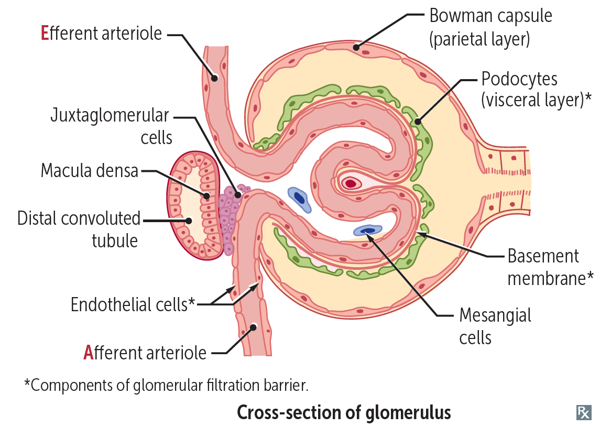
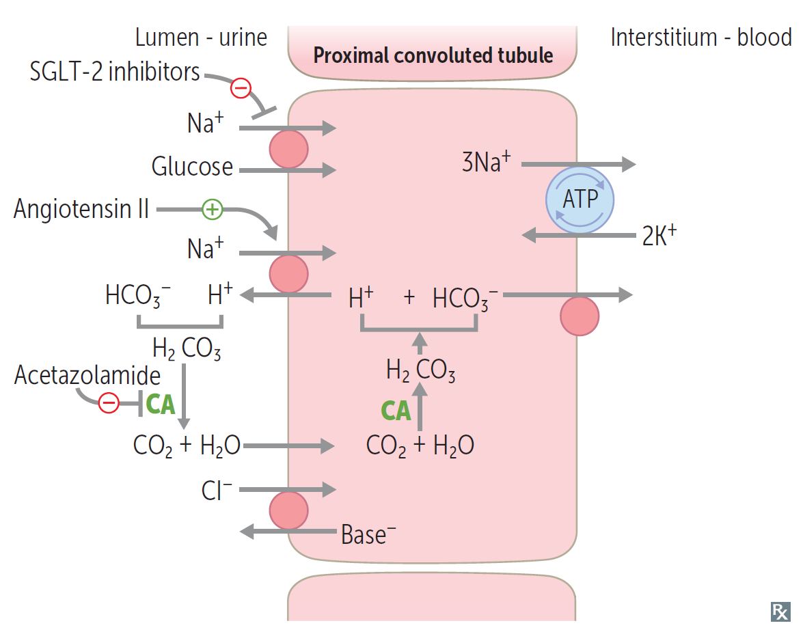
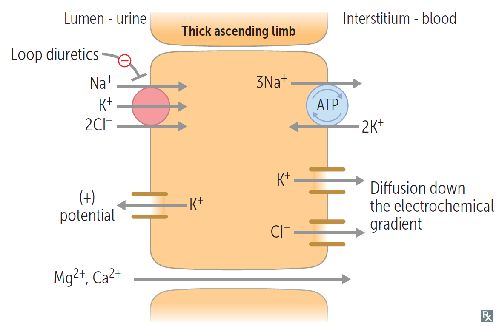
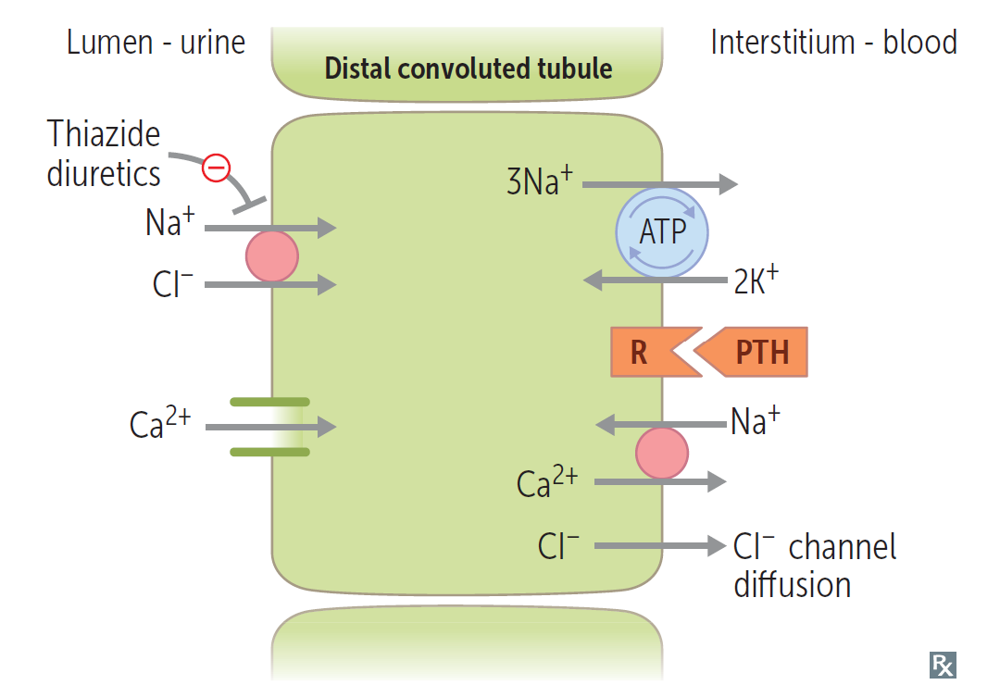
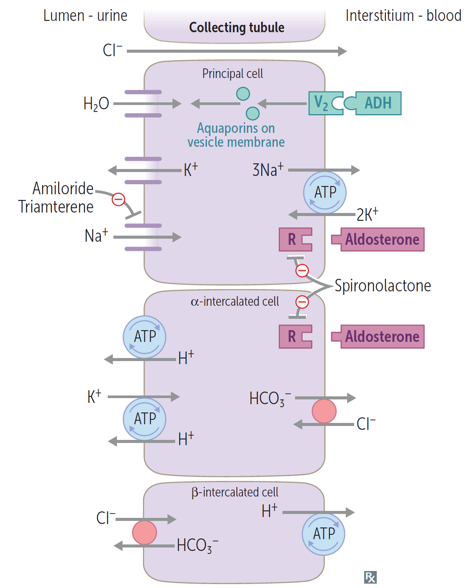
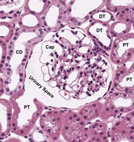
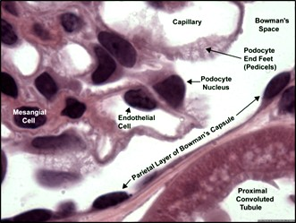
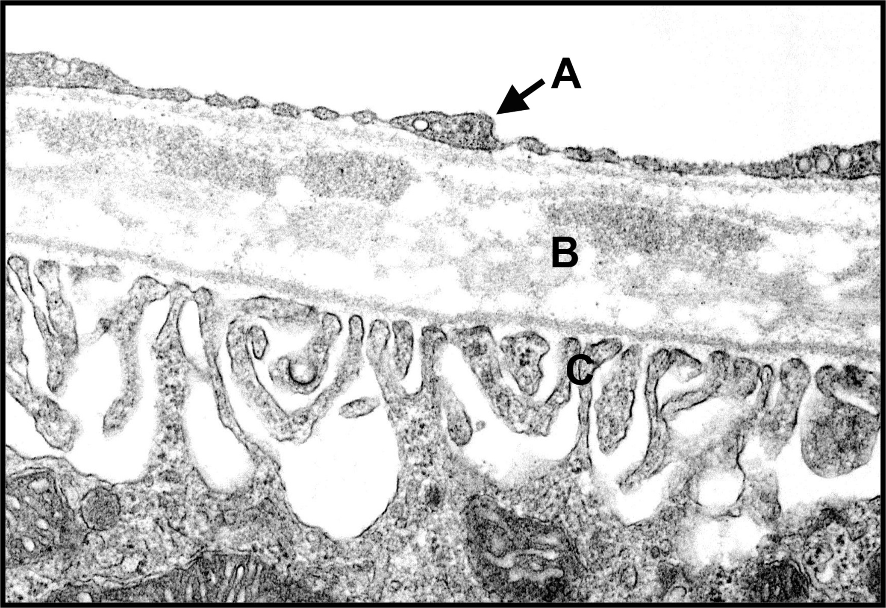
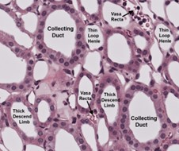
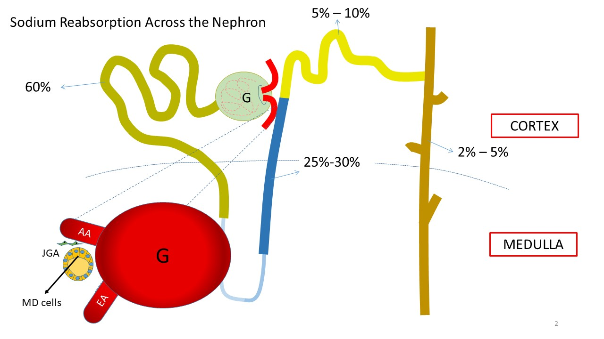

The urinary system comprises of the kidneys, the ureters, the bladder, and the urethra. The two kidneys lie retroperitoneal (recall SAD PUCKER) and inferior to the liver and the spleen on the right and left side, respectively. Note that the right kidney has a longer artery and the left kidney has a longer vein. The outer most layer of the kidney is the capsule. Moving inward, there is the renal cortex, the medulla, the minor calyces, the major calyces, the renal pelvis, and the ureter. The kidney is divided into lobes, which comprises the medullary pyramid, the portion of the medulla, and the portion of the cortex above it, separated by interlobar arteries.
The functional unit of the kidney is called a nephron which comprises an afferent arteriole (bring blood into the nephron), an efferent arteriole (taking blood away from the nephron), the glomerulus (where blood content are intially filtered), the proximal convoluted tubule (PCT), the loop of Henle (consisting of the descending limb, the thick ascending limb, and the thin ascending limb), the distal convoluted tubule (DCT), and the collecting tubule. The blood flow to and from the kidney is as follow: abdominal aorta → renal artery → segmental artery → interlobar artery → arcuate artery → afferent arteriole → glomerulus → efferent arteriole → vasa recta/peritubular capillaries → venous outflow → renal vein → IVC. The left renal vein receives blood from two addtional sources—left suprarenal and left gonadal veins. Despite high overall renal blood flow, the renal medulla receives significantly less blood flow than the cortex, making it more susceptible to hypoxia.🔴🟡 Nephrons can be dividied into 2 groups: cortical nephrons (85%) and juxtamedullary nephrons (15%). In cortical nephrons, the thick ascending limb and thick descending limb are mostly in the medullary ray (which are just radially directed segments of the loop of Henle). In juxtamedullary nephrons, the thick ascending and thick descending limb are in the medulla.
The glomerulus receives blood flow from the afferent arteriole, and blood content (glucose, proteins, etc.) diffuse through the endothelium into Bowman's space, the space enclosed by podocytes of the kidneys. These interditgitating podocytes form filtration slits and are joined together by slit diaphragms (not any junctional complexes), and it is through these slits that plasma content transits from the Bowman's space into the proximal convoluted tubule. The parietal layer of the Bowman's capsule (the side not interfacing with the endothelium, is composed of simple squamous epithelium, which is contiguous with the PCT.
Continuing down the nephron is the PCT which comprises "cuboidal" epithelial cells. On the apical surface (facing the PCT lumen), these epithelial cells contain various transports such as aquaporin-1, Na+-glucose co-transporter (SGLT2), Na+/H+ exchanger, Na+-phosphate co-transporter, and Na+-amino acid co-transporter. On the basolateral surface (facing the basement membrane and the peritubular vessels) are Na+/K+ ATPase which provides the Na+ absorption into the bloodstream and concentration gradient necessary to maintain the other transport systems. Cells of the PCT also contain brush border where carbonic anhydrase Ⅳ is active, turning H2CO2 into water and CO2.
The remainder of the nephron is made of cuboidal epithelial cells. In the thin descending limb of the loop of Henle, these cells contain aquaporin-1 and urea transporter, making this segment permeable to water and urea which regulates the osmolarity of the kidney medulla. In the thick ascending loop of Henle, the cells contain Na+-K+-2 Cl- co-transporter (NKCC) and outward K+ channels on their apical surface and Na+/K+ ATPase and outward K+ and Cl- channels on their basolateral surface. The distal convoluted tubule is interesting because it contacts its own glomerulus, enabling tubuloglomerular feedback (to be discussed in the physiology portion). At the contact site, the distal tubule cells are narrow and closely spaced forming the macula densa which is a part of the juxtaglomerular apparatus. Cells of the DCT contain Na+-Cl- co-transporter and inward-facing Ca2+ channels on its apical surface and Na+/K+ ATPase, Na+/Ca2+ exchanger, and outward Cl- channels.
The collecting tubule is also unique in that it contains three different epithelial cell types—principal cells, α-intercalated cells, and β-intercalated cells. Principal cells are the primary target of ADH and aldosterone; they play a key role in concentrating urine, by reabsorbing Na+ and excreting K+. As such, these cells contain epithelial Na channels (ENaC), aquaproin, outward K+ channels (ROMK) on the apical side on Na+/K+ ATPase. The intercalated cells are target of aldosterone and plays a key role in the K+ and secreting H+. The α-intercalated cells contain H+/K+ exchanger and an outward K+ channel. This maintains the balance of the K+ while enabling H+ secretion.
|  |  |  |  |
| Proximal convoluted tubule | Thick ascending limb of the loop of Henle | Distal convoluted tubule | Collecting tubule |
Continuing along the urinary tract, we reach the collecting duct, which becomes the minor calyx, then the major calyx, the renal pelvis, the ureter, the bladder, and finally the urethra. The collecting tubule and the collecting duct transition from tight cuboidal epitheilium to columnar epitheilium as the duct goes deeper into the medulla. Beginning with the renal pelvis, urothelium (or transitional epithelium) line the tract. This type of epitheilium is a stratified epithelium with large dome-shaped cells in the outer layers. They have extensive tight junctions rendering them impermeable.
The ureter is a 25-30 cm tube that connects from the hilum of the kidney to the bladder. Microscopically, the ureter is made of 3 layers: the mucosa, the muscularis, and adventitia. The mucosa is transitional epithelium. The lamina propia id dense, fibroelastic connective tissues. The muscularis comprise of an inner longitudinal and an outer circular layer of smooth muscle (opposite of the GI tract). The ureters travel anterior to the psoas major muscle, posterior to the gonadal a.a., anterior to the common iliac a.a. and v.v., and anterior to the pelvic to enter the lower pelvis. Along its path, it also passes posterior to the ductus deferens in males or uterine artery in female (water under the bridge).
The bladder is a hollow, muscular, sac-like organ. Its most anterior point is called the apex, and the point opposite of the apex is called the fundus. The inferior region of the bladder where the urethra exits and where the internal urethral sphincter exists is called the neck of the bladder. Spanning the interior surface where the ureters enter and the urethra exits is the trigone of the bladder. The muscle surrounding the bladder is the called the detrusor muscle. Its sympathetic innervation (to relax) is T11-L2, and its parasympathetic innervation (to contract) is S2-S4 via the pelvic splanchnic n.n.
The urethra is also a tubular structure and, much like the ureters, comprises of 3 histological layers. It is 4-5 cm long in females and 15-20 cm long in males. In the female, the transitional epithelium ends very close to the bladder and become non-keratinized stratified squamous for the rest of the way. In the male, the urethra has 3 sections: (1) the prostatic urethra, which is surrounded by the prostate and has transitional epithelium; (2) the membranous urethra, which exist between the prostate the penis and has stratified and pseudostratified columnar epitheilium; (3) the penile urethra, which runs the entire length of the penis and has pseudostratified columnar epitheilium chaning to non-keratinized, stratified squamous near the glans penis.
|  |  |  |  |
| Histology of glomerulus | Glomerulus (high magnification) | TEM of glomerulus (A. fenestrated endothelium, B. common basement membrane) |
Histology of medulla |
Blood enters the glomerulus via the afferent arteriole and leaves via the efferent arteriole. The efferent arteriole continues alongside the nephron forming a network of capillaries called the "peritubular capillaries" in the juxtamedullary nephrons or the "vasa recta" in the cortical nephrons. It is into these capillary beds that filtrate are reabsorbed by the different portions of the nephrons.
In the glomerulus, because of the fenestrated endothelium, plasma content flows freely into Bowman's space. The pressure generated by the difference in hydrostatic pressure and oncotic pressure (which is treated as a negative pressure) draws the plasma into the proximal convoluted tubules. Control of the GFR is accomplished by the glomerulotubular balance and tubuloglomerular feedback. In the first case, an increase in filtration rate causes in increase in oncotic pressure of the peritubular capillaries leading to increased reabsorbed of water and solutes, thus minimizing solute loss. High GFR can be caused by high RBF, which is in turned controlled vascular resistance and aortic pressure. Tubuloglomerular feedback relies on the group of cells that exists in the distal convoluted tubule (DCT) called the macula densa. These macula densa cells sense raise of the Na+ and Cl- concentrations in the DCT and secrete adenosine causing constriction of the afferent arteriole, reducing blood flow. When Na+ and Cl- delivery to the DCT is decreased, the macula densa activates the juxtaglomerular (JG) cells to secrete renin, turning angiotensiongen to angiotensin Ⅰ (ACE then turns AngⅠ to AngⅡ).🔴🟡
Almost all glucose, proteins, and 60% of the sodium is reabsorbed in the PCT.
This section of the nephron reabsorbs water, which lowers the osmotic pressure in the medulla.
To correct for the decreasing oncotic pressure in the medulla, the ascending limb of the loop of Henle reabsorbs solutes (Na, K, Cl, Ca, Mg). This increase the oncotic pressure in the medulla, which in turn increase water reabsorption by the descending limb, creating what is called a countercurrent multiplier. Most of this reabsorption takes in the thick ascending limb (TAL), but the thin ascending limb also reabsorbs some Na+. Recall the TAL has the NKCC channels🔴🟡, and this is the main way by which solutes are reabsorbed in this portion of the loop. The TAL is responsible for 10-20% of the Na+ reabsorption. Ca2+ and Mg2+ are reabsorbed indirectly via electrical potential difference.
The DCT is divided into two sections. The early portion plays a role in solute homeostasis (Na+ and Cl- directly, K+ and Ca2+ indirectly), and it is impermeable to water. This makes the urine dilute and hypotonic. The late portion of the DCT is almost functionally the same as the collecuting tubule. The DCT is responsible for 5-10% of the Na+ reabsorption via the Na-Cl co-transporter🔴🟡.
The primary role of the collecting tubule is to reabsorbs Na+ in exchange for secreting K+ and H+. This process is regulated by aldosterone, a mineralcorticoid hormone synthesized and secreted by the adrenal cortex, specifically the zona glomerulosa cells in the uppermost layer of the cortex. Aldosterone acts on the mineralcorticoid receptor of the principal cells and α-intercalated cells. In the principal cells, aldosterone increases protein synthesis of Na+/K+ ATPase, ENaC activity, and apical K+ conductance, leading to increased Na+ reabsorption and K+ secretion.🔴🟡 In the α-intercalated cells, the luminal negativity by the principal reabsorption of Na+ increase the apical proton pump activity, increases H+ secretion and HCO3-/Cl- exchanger.
Anti-diuretic hormone (ADH, aka vasopressin) act on V2 recpetor in principal cells, leading to insertion of aquaporins on the apical surface.